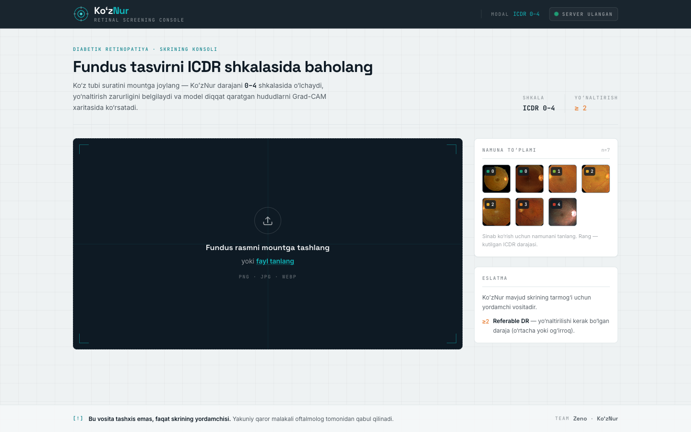
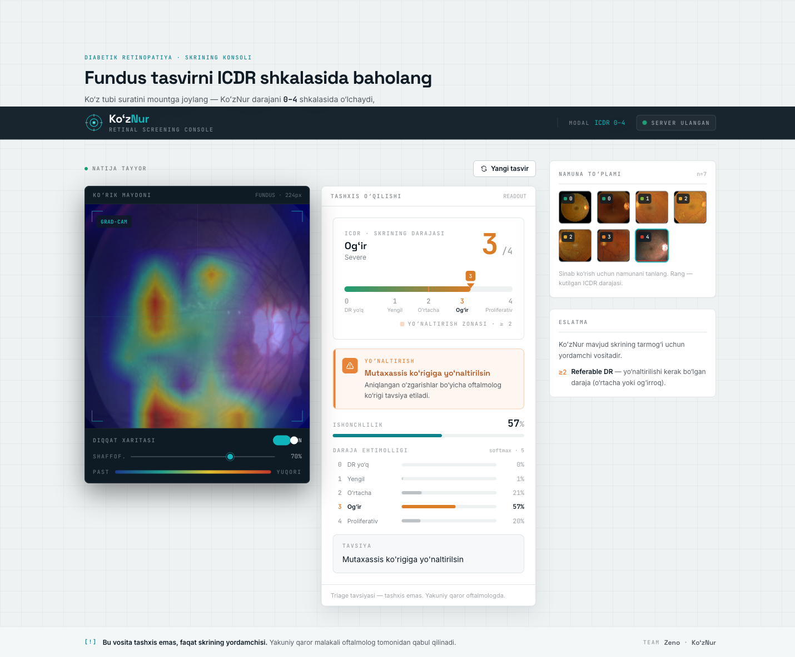

Diabetik koʻrlikni oldini olishni milliy miqyosga olib chiqamiz.
AI triage: bitta fundus suratidan soniyalarda riskni baholaydi va shifokorga faqat kerakli bemorni yoʻnaltiradi. Tashxis emas — qaror yordamchisi.
Diabet koʻpaymoqda. Koʻzdagi zarar esa kech seziladi.
Asosiy toʻsiq kamera emas — tor joy mutaxassis baholash quvvati.
Diabetik retinopatiya ishchi yoshdagi kattalarda oldini olsa boʻladigan koʻrlikning yetakchi sabablaridan. U koʻrish yoʻqolguncha ovozsiz rivojlanadi; har bir diabet bemori muntazam retinal skriningni talab qiladi. Ammo har bir fundus suratini koʻz shifokori qoʻlda baholasa — tizim shu yerda tiqiladi.
Retinopatiya kam uchraydigan muammo emas.
Biz tashxis sotmaymiz. KoʻzNur shifokor qarorini almashtirmaydi — u mavjud skrining oqimini tezlashtiradi: normal suratlar tez ajraladi, xavfli holatlar mutaxassisga yoʻnaltiriladi.
Bir surat. Bir triage javobi. Bir aniq keyingi qadam.
KoʻzNur fundus suratini qabul qiladi va ICDR 0–4 darajasini, yoʻnaltirish belgisini (daraja ≥ 2 = referable), ishonch foizini va Grad-CAM issiqlik xaritasini qaytaradi.
- Konsol — React (Vite + Tailwind) instrument interfeysi
- Server — FastAPI · dvigatel PyTorch (Apple Silicon / MPS)
- Pozitsiya — saralash / qaror yordamchisi, tashxis EMAS
- Mavjud skrining tarmogʻini modernizatsiya qiladi, shifokorni almashtirmaydi

Quvurning har bosqichi izohlanadi.
Fundus surati
Skrining punktida olinadi.
Ben-Graham kesim
Radius shkalasi → 288 → 256 → ImageNet normalizatsiya.
Regressiya · 5-fold
SE-ResNeXt50 ansambl → ostona [0.5–3.5].
Grad-CAM
Model diqqat qaratgan hudud koʻrsatiladi.
Triage javobi
ICDR daraja, ishonch, referable belgisi.

Eski prototip proliferativ holatlarni xato ravishda «No DR» deb baholar edi.
Joriy dvigatel ularni ishonchli ravishda referable (Severe / Proliferative) deb belgilaydi. Amber rang faqat shu yoʻnaltirish ogohlantirishi uchun ishlatiladi.
Oʻlchangan natijalar — oshirilmagan, himoyalanadigan.
Halol sarlavha. APTOS held-out splitda QWK 0.93 va referable sezgirligi 0.978 oʻlchandi, ammo bu split taqsimot ichida edi — shuning uchun biz konservativ ~0.92 QWK va ~0.92–0.95 referable sezgirligini taqdim etamiz. Ogʻir darajalar haqiqatan qiyin, lekin notoʻgʻri «yoʻq» emas — ular referable deb toʻgʻri belgilanadi.
Bozorni oshirmaymiz — hisobni ochiq koʻrsatamiz.
Kamera sotmaymiz — skrining oqimidan daromad olamiz.
Har skrining uchun AI toʻlovi
Har tahlil qilingan fundus surati uchun 8,000–12,000 soʻm. Klinika uchun arzon, KoʻzNur uchun takrorlanadigan.
Region / klinika litsenziyasi
Dashboard, foydalanuvchi hisoblari, audit izi, PDF hisobot, integratsiya va statistika uchun oylik/yillik toʻlov.
Validatsiya paketi
Pilotda lokal suratlarni ekspert baholaydi → klinik samaradorlik hisoboti va procurement uchun asos.
- Davlat skrining dasturlari (B2G)
- Koʻz klinikalari va diagnostika markazlari
- Diabet markazlari va xususiy tibbiy tarmoqlar
- Koʻproq bemorni kamroq shifokor vaqti bilan qamrash
- Referral oqimini tartibga solish
- Aniq KPI: nechta skrining, xavfli holat, follow-up
Dunyo miqyosida isbot bor — mahalliy ijro hali ochiq.
Past CAPEX, yuqori takrorlanish, ehtiyotkor margin.
Eng muhim tanlov: qurilma sotish biznesiga kirmaymiz.
KoʻzNur mavjud fundus kameralar va skrining punktlariga ulanadi. Xarajatlar asosan bulutli inferens, texnik qoʻllab-quvvatlash, lokal validatsiya va integratsiyadan iborat.
Procurementga sakramaymiz — avval validatsiya, keyin kontrakt.
MVP demo
- Konsol + PDF hisobot
- Grad-CAM izohi
- Triage javobi
Lokal validatsiya
- 500–1,000 anonim surat
- Oftalmolog baholari
- Sezgirlik/spetsifiklik
Pilot shartnoma
- 1 region / 3–6 sayt
- 30k–60k skrining/yil
- Yoʻnaltirish KPI
Kengayish
- Regionlarga joriy
- Davlat xaridi asosi
- Yangi ko‘z modullari
Hakamga javob: «Agar buni 2 kunda kodlash mumkin boʻlsa, nega hali joriy qilinmagan?» — Chunki model demosi eng qiyin qism emas. Qiyin qismlar: lokal klinik validatsiya, ishonch, ish oqimiga integratsiya, xarid jarayoni va keyingi nazorat. KoʻzNur aynan shu toʻsiqlardan oʻtishning aniq kirish nuqtasi va ishonchli yoʻlini koʻrsatadi.
Puldan oldin — pilot maydon va klinik tekshiruv.
30–45 kun: yoʻnaltiriladigan DR boʻyicha validatsiya hisoboti. 3–6 oy: koʻproq skrining qilingan bemor, kamroq keraksiz baholash, tasdiqlangan yoʻnaltirish nazorati.
- Surat sifatiga bogʻliqlik
- Ogʻir darajalar — qiyinroq
- Prospektiv klinik validatsiya zarur
- Maʼlumot maxfiyligi va etika
Arzon. Takrorlanadigan. Kengayadigan. Oʻzbekistonda diabetik koʻrlikka qarshi skriningni shifokor vaqtiga bogʻlab qoʻymaymiz — biz mutaxassisni voronkaning oldidan olib tashlaymiz, ular faqat referable ~20–30% ni koʻradi.